Contents
Polly manual
Polly turns the M-VAVE FM-1 into a pocket arranger, inspired by the Yamaha QY70. Pick a style, and a band of eight instruments plays along. Hold a chord, and the bass, the guitars and the strings follow it. Write a few bars of chords, and Polly plays a full song from them.
The sounds are the 128 General MIDI instruments and a drum kit, from Sonivox EAS. You hear them through the speaker or the headphone jack, and MIDI coming in can play them too.
New to Polly? Start with 101 Playing live in Polly School. Each lesson is short and has a video. Come back to this manual when you want to look something up.
- Cheat sheet
- Getting around
- Styles and grooves
- Chords
- Progressions
- The song
- Recording an instrument
- Melodies
- Fixing notes
- Sound
- Songs and saving
- Setup and MIDI
- The QY70 bank
- Updating and safety
- Page by page
- Screen mirroring
- Screen reader
- Credits
Cheat sheet
This chapter collects the words Polly uses, the common tasks, and what each button does. The rest of the manual uses the same words.
The words
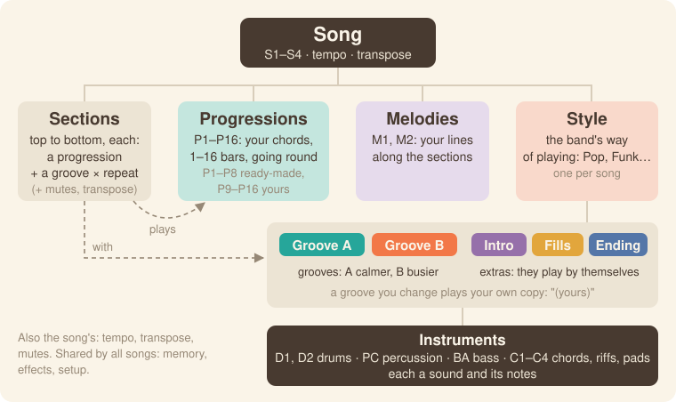
Song (S1–S4)
├─ Sections each plays a progression with a groove, a set number of times
├─ Progressions P1–P16
├─ Melodies M1, M2
└─ Style Groove A, Groove B, Intro, Fills, Ending
└─ Instruments D1, D2, PC, BA, C1–C4- Song (S1–S4): one piece of music. Each song has its own style, progressions, sections, melodies, tempo and transpose.
- Section: a part of the song, such as a verse or a chorus. A section plays one progression with one groove, a set number of times. A song can have up to 32 sections, and plays them from top to bottom.
- Progression (P1–P16): a row of chords that plays in a loop, 1 to 16 bars long. P1–P8 come ready-made, and P9–P16 are for your own. The screen often shortens it to "Prog".
- Chord: one chord in a progression.
- Melody (M1, M2): a line you record along the whole song, section by section.
- Style: the way the band plays, such as Pop or Funk. Each song has one style.
- Groove: how the band plays a section. Groove A is calmer and Groove B is busier.
- Intro, Fill, Ending: extra parts of a style that the band plays by itself. The Intro opens the song and the Ending closes it. In a song, a Fill plays when the next section has a different groove, and you can ask for one at any time.
- Instrument: one player in the band. D1 and D2 are drums, PC is percussion and BA is bass. C1–C4 play chords, riffs and pads. Each instrument has a sound and its own notes.
- Sound: what an instrument or a melody plays with: one of the 128 General MIDI sounds, or the drum kit.
- (edited): once you change a groove, Polly plays an edited copy of it, and the screen says "Groove A (edited)". The style itself doesn't change, and BACK TO STYLE switches back to it. See Edited grooves.
- Tempo: the song's speed, in BPM.
- Transpose: moves everything up or down in pitch, including the keys you play. The song has a transpose, and each section can add its own.
- Repeat: how many times a section plays.
- Mute: silences an instrument or a melody. See Mutes.
- Follow: no progression is playing, so the band follows the chords you play. Home's KNOB 4 (Prog) shows "follow".
- Memory: 16 places that keep your grooves and melodies. The four songs share them. Progressions don't use memory, because each song keeps its own.
- Undo / Redo: take back a change, or bring it back.
- Click: the woodblock that counts the beats while you record.
- Count-in: the bar of clicks you hear before a recording starts.
- Backup: a copy of your songs, kept in a file on a computer.
- Mirror: Polly's screen, shown live on a computer. You can also play the panel from there.
How do I…
White keys are numbered from the left, 1 to 16, and black keys the same way, 1 to 11. "Hold HOME and press…" means keep HOME down while you press the next thing.
| How do I… | Do this |
|---|---|
| pick a style | Press HOME and turn KNOB 1. |
| play a progression | Hold HOME and press white key n, and Pn plays in a loop. If the band is already playing, it switches at the next bar. |
| change the groove | Hold HOME and press black key 2 for Groove A or 3 for Groove B. Black key 4 plays a fill, 1 the Intro and 5 the Ending. |
| set the tempo | Turn KNOB 2 on Home. On any other page, hold HOME and turn SELECT. |
| write a progression | Press HOME and turn KNOB 4 anticlockwise to "follow". Press REC, then PLAY. After a bar of clicks, play one chord per bar, then press REC again. |
| go to bar 1, beat 3 | Press ARP. Turn KNOB 1 (Bar) to 1 and KNOB 2 (Beat) to 3. OCT− and OCT+ step one beat back or forward. |
| fix a chord | Press ARP. Move to the chord with KNOB 1 (Bar) and KNOB 2 (Beat), then turn KNOB 3 (Root) or KNOB 4 (Type). To change its bass note, turn SELECT to page 2 and turn KNOB 3 (Bass). |
| delete a chord | Press ARP and move to the chord with KNOB 1 and KNOB 2. Press SEL, and the list opens on CLEAR CHORD. Press SEL again. |
| lengthen a progression | Press ARP, turn SELECT to page 2 and turn KNOB 1 (Length). |
| copy a progression | On Home or the Progression page, hold SAVE and press white key n. Polly copies the progression to Pn. |
| open the Song page | On Home, press HOME. Press it again to go back. |
| add a section | On the Song page, press white key n. A section playing Pn goes in where the coral arrow points. If the cursor is on END, it goes at the end. |
| remove a section | On the Song page, move to it with KNOB 1 (Section) and turn KNOB 2 (Prog) down past P1 to "–". Polly removes it when you leave the Song pages. |
| skip a section's fill | On the Song page, turn KNOB 3 (Groove) to "A no fill" or "B no fill". |
| play from section 3 | On the Song page, turn KNOB 1 (Section) to 3 and press SEL. The list opens on PLAY FROM SECTION 3. Press SEL again. |
| loop the song | On the Song page, turn SELECT to page 2 and turn KNOB 4 (At end) to "again". |
| change an instrument's sound | Press EDIT, turn ALGORITHM to the instrument and turn KNOB 1 (Sound). |
| mute an instrument in one section | On the Song page, move to the section and press the instrument's black key. Black keys 1–8 are D1 to C4. Or, while you're in a song, press SEQ, turn ALGORITHM to the instrument and turn KNOB 4 (Muted in 2). |
| mute an instrument outside a song | Press SEQ, turn ALGORITHM to the instrument and turn KNOB 4 (Muted). Turn it again to unmute. |
| record into an instrument | Press SEQ, turn ALGORITHM to the instrument, and press REC and then PLAY. Play along, then press REC again. |
| record a melody | On the Song page, press PLAY. Press EDIT and turn ALGORITHM past C4 to M1. Press REC, play, and press REC again. |
| fix one wrong note | Press SEQ twice to open Notes, and turn ALGORITHM to the instrument or melody. Turn SELECT until the coral ring is on the note, then turn KNOB 2 (Pitch). To delete the note, press EDIT. |
| undo or redo | Hold HOME and press REC to undo, or PLAY to redo. |
| switch songs | Hold HOME and turn PRESETS. |
| save | Press SAVE. Polly also saves by itself when it's stopped, about four seconds after you last touch it. |
| see what's using the memory | Press SEQ, then SEL. Turn SELECT down to MEMORY at the end of the list, and press SEL. |
| back up | Connect the FM-1 to a computer, open the Backup page in Chrome or Edge, and press Back up. |
| start a song from scratch | Stop. On the Song page, press SEL, turn SELECT to NEW SONG and press SEL. Press SEL again to confirm. |
| go back to factory settings | Stop. Press GLO, then SEL, and choose FACTORY RESET. Press SEL again to confirm. |
The buttons
| Control | What it does |
|---|---|
| PLAY | Starts and stops. On the Song page, it plays the song. |
| REC | Records what the keys play on this page: chords, an instrument, a melody or sections. |
| SEL | Opens a list of this page's settings and actions. When Polly asks a question, SEL means yes. |
| HOME | Opens Home. On Home, it opens the Song page. Hold HOME for the shortcuts. When Polly asks a question, HOME means no. |
| ARP | Opens the Progression page, where you edit chords. |
| SEQ | Opens the Band page, where you see each instrument's notes. Press it again to open Notes and fix single notes. |
| EDIT | Opens the Sound page, where you pick the instrument's sound and range. |
| LFO | Opens the Mixer. |
| FX | Opens Effects, for reverb and chorus. |
| ENV | Opens the Style page, where you choose which style plays each groove and extra. |
| GLO | Opens Setup. Its page 2 is Status. |
| SAVE | Saves. Hold it and press a white key to make a copy. |
| OCT− / OCT+ | Move the keys down or up an octave. |
| SELECT | Turns to a button's next page. In a list, it moves up and down. |
| ALGORITHM | Picks the instrument, or a melody. |
| PRESETS | Steps to the next item of whatever the page shows. |
| KNOB 1–4 | Set the four values at the bottom of the screen. |
The two lines at the bottom of the screen always tell you what each control does on the page you're on. Hold any button for a second, and a card explains it. For details, see Getting around.
Getting around
This chapter explains the panel, the screen and the lights.
The panel
For a list of every button, see the cheat sheet. This table covers the controls that do more than one thing. For every page and its knobs, see Page by page.
| Control | What it does |
|---|---|
| PLAY | Starts and stops. On a Song page, it plays the song from section 1. If a progression is already playing, the song starts at the next bar. If REC is on, Polly counts in with a bar of clicks first. |
| REC | Records what the keys play on this page. On Home and the Progression page, it writes chords into the progression. If no progression is playing on Home, it starts a new one. On Home in a song, it pauses the song ("SONG PAUSED") and writes into the progression of the section that was playing, or of the section at the Song page's cursor. On Band, Sound and Notes, it records the selected instrument, or a melody if you're in a song. On the Song page, it writes sections. |
| SEL | Opens a list of the page's actions and settings. The list starts on the first action, such as LOAD PROGRESSION, PLAY FROM SECTION or CLEAR C1. Turn SELECT up to reach the page's values and MORE. The bottom line tells you what SELECT, ALGORITHM, SEL and HOME do in the list. |
| HOME | Opens Home. On Home, it opens the Song page, and on the Song page it takes you back to Home. |
| Hold HOME | Shows the shortcuts on the screen. Press a white key to play that progression, or press the one that's playing to stop it, so the band follows your chords again. Press black keys 1–5 for a groove or an extra. Turn SELECT to set the tempo, or PRESETS to change songs. Press REC to undo and PLAY to redo. |
| SEQ | Opens the Band page, where you see the groove's notes. Its page 2 is Groove length. Press SEQ again on either page to edit single notes, and press it once more to go back to Band. |
| EDIT | Opens the Sound page. Its page 2, Sound 2, has the high key and the channel. A melody has only the first page. In Notes, EDIT deletes the selected note. |
| Hold SAVE | Hold it and press white key n to make a copy. On Home or the Progression page, Polly copies the progression to Pn. On Band or Groove length, it copies the groove to place n in memory. You can copy a progression while Polly plays, but to copy a groove, stop first. Polly asks first if the place already holds something. |
| SELECT | Turns to the button's next or previous page. In a list, it moves up and down. |
| ALGORITHM | Picks the instrument, on any page. It goes D1, D2, PC, BA, C1, C2, C3, C4, and then the melodies M1 and M2. |
| PRESETS | Does something different on each page. On Home and the Progression page, it steps to the next progression. Hold HOME and turn it to change songs. |
| OCT− / OCT+ | Move the keys down or up an octave, from −3 to +3. On the Progression page, they move the cursor one beat back or forward instead. |
| Keys | Play chords on Home and the Progression page, and the selected instrument on Band, Sound and Notes. On the Song page they add sections and set mutes, and on the Mixer they pick a strip. |
| Hold a button for a second | A card explains what the button does on this page. Let go, and nothing changes. HOME shows its shortcuts instead. |
Pages and dots
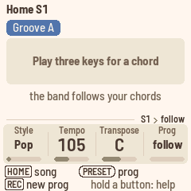
A page button stays lit while you're on one of its pages, and pressing it opens its first page. (On the Band pages, SEQ opens Notes instead.) Some buttons have a second page: turn SELECT to reach it. The dots at the right, above the knobs, tell you which page you're on.
HOME switches between Home and the Song page. Home is where you play and write progressions, and the Song page is where you put them in order. The Song page has a second page too, which you reach by turning SELECT.
The screen
From top to bottom, the screen has five parts.
- The header starts with a small keycap of the page's button and the page's name, such as "[SEQ] Band". On Home it shows the song instead, such as "Home S1", and while you hold HOME it reads "HOME + a key · S1". The tempo sits at the right, except on Home, where KNOB 2 shows it. If MIDI clock is setting the tempo, you'll see "ext" there. A coral dot means Polly is recording, and "unsaved" means you have changes to save.
- The middle is the page itself.
- The tag line, just above the knobs, tells you where you are, from the song down. On Band, Sound and Mixer it reads something like "S1 › Pop › Groove A › C1 Acoustic Grand". On the Progression page it's "S1 › P9 Verse", and on the Song page, or on Home in a song, just "S1". With no progression playing it reads "S1 › follow", and with a melody selected, "S1 › M1 Choir Aahs". If the line gets too long, the first steps drop off. Your place inside the page, such as a bar or a section, is shown by the cursor.
- The knobs strip shows what KNOB 1–4 do on this page, with their values. The knob you just turned shows coral for a moment. Pages without knobs, such as Status, don't have the strip.
- The two bottom lines label each control with a pill, like the labels printed on the panel, followed by what it does here.
The first part of the bottom lines is for the three encoders, in round pills. It tells you what turning SELECT, ALGORITHM (ALGO) and PRESETS (PRESET) will change, for example "[SELECT] page · [ALGO] instrument · [PRESET] groove".
- SELECT turns the button's pages, and the dots show which page you're on. If a button has only one page, SELECT isn't listed. In Notes, SELECT picks a note.
- On Home, the line starts with "[HOME] song", because HOME opens the Song page from there.
- ALGO picks the instrument or melody the keys play. It's listed on the pages that show an instrument: Band, Groove length, Sound, Sound 2, the two Mixer pages and Notes.
- PRESET steps through the progressions on Home and the Progression page, the sections on the Song page, the grooves on Band and Groove length, the sound families on Sound, the zoom in Notes, and the styles on the Style page.
- While you hold HOME, the line reads "[SELECT] tempo · [PRESET] song".
The second part is for the keys and buttons, in square keycaps. It tells you what they do on this page, for example "[KEYS] chords · [REC] write · [OCT] cursor", "[KEYS] C1 · [REC] record" or "[WHITE] progression · [BLACK] mutes". While Polly records, it reads "[REC] stop". Controls you use together appear joined, as in "[HOME]+[KEYS] sections". On Effects, Style, Setup and Status the keys do nothing, so you only see the encoders' part. When everything fits on one line, there's only one line.
A few screens are different:
- The very first screen says "[REC] new prog · hold a button: help".
- In a list, you only see the list's own line, such as "[SELECT] move · [SEL] do it · [HOME] back".
- A question says "[SEL] yes · [HOME] no".
- While you hold HOME, the second part says "[REC] undo · [PLAY] redo".
- While a help card is up, the line says "let go: nothing changes".
Messages
Short messages such as "SAVED" or "NEXT GROOVE B" cover the header for a moment, in a rounded box. The icon tells you what kind of message it is:
- i (beige): news, such as "PROGRESSION P1 POP".
- ✓ (beige): something done, such as "SAVED" or "CLEARED".
- An arrow back or forward (beige): an undo or a redo, and what it changed.
- ? (coral): a question. It stays until you answer: SEL means yes, and HOME means no.
- ! (ink): Polly couldn't do what you asked, and the message says why, such as "RESET · STOP FIRST". It stays up for two seconds.
The cursor, the playhead and the colours
The cursor is a thick coral outline. It marks where the knobs and keys will write.
- On the Progression page, it goes around a chord's cell, and the bar and beat numbers turn coral.
- On the Song page, it goes around a section, and "section 3 of 6" appears above the rows.
- On Band, it's a line down through the instruments, with the bar and beat, such as "bar 2.3", in coral above it.
- On Sound with M1 or M2 selected, it goes around a section of the melody and that section's first bar.
Whatever is playing is filled teal, and on Band the playhead is a teal line. If you see a coral outline around a teal fill, the cursor is on the beat that's playing.
Whatever you change flashes coral for half a second. That goes for a chord, a section, an instrument's row, a bar of notes you just recorded, and anything undo or redo brings back. In Notes, only the notes you changed flash, with a small mark on the song line, so the ring around the selected note stays clear while you turn a knob.
Each colour means one thing:
- Teal is what's sounding now: the bar, beat, section or progression that's playing, and the playhead. Nothing else is teal.
- Coral is you: the cursor, the flash of an edit, the knob you turned, REC, a chord you play over a progression, and questions and messages.
- Ink and its greys are for everything that stays put: names, values, the selection in a list, and the ring that marks where PLAY will start.
- Slate and amber are Groove A and Groove B, on their pills. The extras (Intro, Fills, Ending) have outlined pills.
- Plum is for the melodies.
The instruments
A groove has eight instruments, named as on the QY70:
| Instrument | Usually plays |
|---|---|
| D1, D2 | Drums |
| PC | Percussion |
| BA | Bass |
| C1–C4 | Chords, riffs and pads |
Turn ALGORITHM on any page to pick an instrument. The screen shows its name and sound, the keys play that sound, and REC records into it. On a new Polly, C1 is selected, and it plays piano. After C4 come the song's two melodies, M1 and M2. See Melodies.
The keys
At octave 0, the 27 keys go from F3 to G5. OCT− and OCT+ move them an octave at a time. The FM-1's keys don't sense how hard you press, so every note plays at the same velocity.
The lights
- PLAY is green while Polly plays, and red while it plays and records. If you press REC while Polly is stopped, PLAY blinks red. Press it, and Polly counts in for a bar and starts recording.
- REC lights while Polly records, and while it waits for you to press PLAY.
- SAVE lights when you have something to save.
- The button of the page you're on is lit.
- Keys light while you hold them, unless Setup's Lights is set to "off".
- While you hold HOME, a black key lights for the groove or extra that's playing, or the one coming next, and a white key lights for the progression that's playing.
- On the Song page, the black keys of the instruments muted in the section at the cursor glow dimly.
- With Setup's Lights set to "on", the other buttons glow dimly too, so you can find them in the dark.
Styles and grooves
A style is the way the band plays. This chapter covers picking a style, switching between its grooves and setting the tempo. Every style has two grooves, plus extras that play before, between and after them.
| Part | What it does |
|---|---|
| Intro | Plays once at the start, then Groove A. |
| Groove A | The calmer groove. Plays in a loop. |
| Groove B | The busier groove. Plays in a loop. |
| Fill AB | One bar that leads from Groove A into Groove B. |
| Fill BA | One bar that leads from Groove B back to Groove A. |
| Ending | Plays once, then stops. |
Polly has 16 styles of its own: Pop, Funk, Rock, Ballad, Bossa, Swing, Shuffle, Reggae, Hip hop, House, Disco, Country, Gospel, Waltz, Latin and Ambient. Their drums are real drummers' performances from the Groove MIDI Dataset. If you install a QY70 bank, the QY70's 128 preset styles come after them on the Style knob, whose label then reads "QY style".
Picking a style
On Home, turn KNOB 1 (Style). You can change styles while the band plays, and each of the four songs has its own style.
Every style has its own tempo, and picking a style sets it, until you set the song's tempo yourself. From then on, Polly keeps your tempo when you change styles and tells you so, for example "TEMPO KEPT 84 (HOUSE 122)". If you'd rather have the style's tempo, press SEL: the list opens on STYLE TEMPO 122, and pressing SEL again uses it. After that, picking a style sets the tempo again.
Edited grooves stay. Once you record into a groove or an extra, or change one of its sounds, Polly plays an edited copy instead of the style's. You'll see "Groove A (edited)" on its pill on Home and Band, "House (edited)" on the Style knob, and "Pop (edited)" on the Style page.
Turning the Style knob only changes the grooves that still play the style, and edited ones stay as they are. That way you can keep your edited Groove A and hear the rest of the band in Funk, then in Rock. When you stop turning the knob, Polly asks "KEEP YOUR EDITED GROOVE A?" or "KEEP YOUR 2 EDITED GROOVES?". Press SEL to keep them, or HOME to play the new style's grooves instead, as BACK TO STYLE would. Either way, your copies stay in memory.
To give a groove back to the style, play it first. While the band plays, hold HOME and press the groove's black key. Then press SEL on the Band page and choose BACK TO STYLE (see the groove's actions). Your copy stays in memory, so you can pick it again later.
Changing grooves
Hold HOME and press a black key:
| Black key | Plays |
|---|---|
| 1 | Intro |
| 2 | Groove A |
| 3 | Groove B |
| 4 | Fill |
| 5 | Ending |
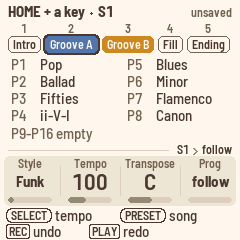
While you hold HOME, the screen lists these five, each under its black key's number. Below them are the progressions that have chords, and the empty ones share a line underneath, such as "P9–P16 empty".
- What's playing now is teal: a teal ring around a groove, or a progression with its number on teal and its name in teal.
- What you've asked for is coral, with a coral ring or its number on coral. It starts at the next bar.
- When Polly is stopped, ink marks what PLAY will start with, with an ink ring or a number on ink.
If the band is playing, your change waits for the next bar, and Home shows NEXT with the groove until then. If Polly is stopped, you're choosing what PLAY starts with, and Polly tells you, for example "FIRST GROOVE B".
Fills
- You don't pick the fill yourself. From Groove A, Fill AB plays and leads into Groove B. From Groove B, Fill BA plays and leads back to Groove A.
- Asking for a fill while one is playing adds another bar of fill.
- The Intro and the Ending can't be interrupted by a fill. They play to the end, and Polly shows "NO FILL".
- If a style has no Fill BA, Fill AB plays instead, and the other way round.
Starting and ending
- PLAY starts with Groove A. The Intro plays first if you start a song while Polly is stopped and the song's Intro is on, or if you pick the Intro before pressing PLAY (hold HOME and press black key 1).
- The Ending plays once, and then Polly stops. If there's no Ending, Polly stops at the end of the bar. Afterwards, the pages show what PLAY will start with again: section 1's groove in a song, or otherwise Groove A, never the Ending.
Intros and endings hold a chord
As on the QY70, the Intro and the Ending play over one held chord, because they bring their own lead-in and closing cadence. Whatever chord is playing on their first beat lasts until they end, but a chord you play on the keys still changes it right away.
Tempo
Turn KNOB 2 (Tempo) on Home. On any page, you can also hold HOME and turn SELECT. The tempo goes from 40 to 240 BPM, and you'll see it at the top right of the screen. When Polly follows MIDI clock, it says "ext" there instead.
The Style page (ENV)
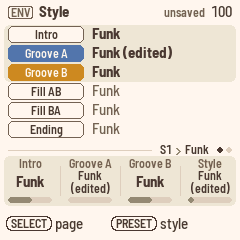
On the Style page, you choose which style plays each of the song's grooves and extras. For example, you can play Funk's Groove A with Rock's fills.
- On page 1, KNOB 1–3 set the Intro, Groove A and Groove B, which are shown in bold on a panel.
- Turn SELECT for page 2, where KNOB 1–3 set Fill AB, Fill BA and the Ending.
- Each knob lists your edited copies first, such as "Funk (edited)", and then the styles by name.
- KNOB 4 and PRESETS set the song's style, like Home's KNOB 1. They change the grooves that play a style, and leave edited ones alone.
Chords
Polly's grooves are written as if the chord were C major 7. As the band plays, Polly moves every note of every instrument to fit the current chord. There are three ways to give it chords: play them on the keys, play a progression, or play a song.
Playing chords
On Home and the Progression page, the keys play chords.
- Hold down three or more different notes. Polly names the chord, and the band follows it. If no progression is playing, Home shows the chord's name in large letters.
- The chord keeps playing after you let go, as on an arranger keyboard, so you can play the next one whenever you're ready.
- Inversions work: E G C and G C E are both C.
- When the notes could be read two ways, Polly takes the lowest note as the root. A C E G is Am7, C E G A is C6, and D F A C is Dm7.
- The lowest note is the bass. If it's the chord's root, 3rd or 5th, you get that chord. Any other note at the bottom becomes a slash bass under the chord the upper notes make: D under C E G is C/D, F under C E G is C/F, and B♭ under C E G is C/B♭. For C7, put the B♭ above the C: C E G B♭.
- You can leave out the 5th. C E B♭ is also C7.
- Two notes aren't a chord, so they don't change anything.
- If a progression is playing, a chord you play lasts until the progression's next chord change. Home shows it at the top right in coral, because it's yours.
- Writing in time. When you write chords while a progression plays, or while you record a new one, each chord lands on the nearest beat. The one exception is the first chord of a bar: if you play it during the bar's first beat, it lands on the downbeat, so a chord that's a little late still counts as being on the one.
The chord types
There are 25 chord types.
| Major | Dominant | Minor | Other |
|---|---|---|---|
| maj | 7 | m | aug |
| add9 | 7(9) | madd9 | dim |
| M7 | 7(#9) | m7 | sus4 |
| M7(9) | 7(b9) | m7(9) | 7sus4 |
| 6 | 7(13) | m7(11) | |
| 7(b13) | m6 | ||
| 7(#11) | mM7 | ||
| 7(#5) | m7(b5) |
When a beat doesn't have a chord of its own, the Progression page's Type knob shows "–". A progression with no chords yet plays "–" too, and every instrument follows the root.
Transpose
Home's KNOB 3 (Transpose) moves everything to another key, from −6 to +5 semitones, as on an arranger keyboard. The knob shows the key, such as "C" or "D". It moves the progressions, the song, and everything you play on the keys, whether chords, an instrument's notes or a melody. In a song, each section's own Transpose adds to it.
Home's bars show the chords as you hear them. Polly keeps the chords you write and the notes you record just as you heard them, so they play back the same, and they move along if you change Transpose later. MIDI in isn't transposed. The keys' octave (OCT− / OCT+) is a separate setting.
Progressions
This chapter covers writing and editing progressions. For a walk-through, see the lesson 102 Your own progressions.
Ready-made progressions
On a new Polly, P1–P8 hold eight factory progressions: Pop, Ballad, Fifties, ii–V–I, Blues, Minor, Flamenco and Canon. P9–P16 are empty, ready for your own. To play a progression, hold HOME and press its white key.
Polly knows 16 ready-made progressions in all, and you can copy any of them into the progression you're on. Press SEL on Home or the Progression page, choose LOAD PROGRESSION, and turn ALGORITHM to pick one. They come in this order:
| 1 to 4 | 5 to 8 | 9 to 12 | 13 to 16 |
|---|---|---|---|
| 1 Pop (I–V–vi–IV) | 5 Blues (12 bars) | 9 Canon | 13 Jazz (I–VI7–ii–V) |
| 2 Ballad (vi–IV–I–V) | 6 MinBlues (minor blues) | 10 Flamenco (Andalusian) | 14 Vamp (ii–V) |
| 3 Fifties (I–vi–ii–V) | 7 One-four | 11 Mixo (I–♭VII–IV) | 15 Gospel (IV–I) |
| 4 ii–V–I | 8 Minor (i–VI–III–VII) | 12 Doo-wop | 16 Waltz (3/4) |
Writing a new progression
- On Home, turn KNOB 4 (Prog) anticlockwise to "follow", so that the band follows you.
- Press REC, then PLAY, and Polly counts in with a bar of clicks. If the band is already playing, press only REC, and recording starts at the next bar.
- Play the chords on the keys, in time. Each one lands on the nearest beat.
- Press REC again. Polly saves the bars you played in the first empty progression, such as P9, tells you "NEW PROGRESSION P9", and plays it in a loop. If P1–P16 all have chords, Polly says "NO EMPTY PROG", and you'll need to clear one first.
The Progression page (ARP)
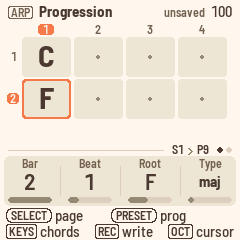
The Progression page shows a progression's bars, with one cell for each beat. Short progressions get taller cells. The cursor is a thick coral ring, and its bar and beat numbers are coral too. While the band plays, the beat that's playing is teal.
The page shows the progression that's playing, or the one you picked last. Until you've picked one, it opens on the first empty progression, so you never write over a factory one.
- KNOB 1 (Bar) and KNOB 2 (Beat) move the cursor. Changing the bar keeps the beat, and the grid scrolls to follow. While you're recording, you can move one bar past the end, and a chord there makes the progression longer.
- KNOB 3 (Root) and KNOB 4 (Type) change the chord at the cursor. Type starts at "–", which means no new chord starts on this beat and the chord before it carries on, so turning Type down to "–" clears the chord. After "–", the types go maj, m, 7, m7, M7, sus4, 7sus4, 6, m6, add9, madd9, M7(9), 7(9), m7(9), m7(11), dim, m7(b5), aug, mM7, and then the altered sevenths. The knob stops at both ends.
- OCT− and OCT+ move the cursor one beat.
Turn SELECT for page 2:
- KNOB 1 (Length) sets how many bars the progression has, up to 16 bars of 4 beats. A progression can hold 64 beats at most, so with 5, 6 or 7 beats in a bar you get fewer bars.
- KNOB 2 (Beats) sets the number of beats in a bar, from 2 to 7. Every chord stays where it was: a chord on bar 2, beat 1 is still on bar 2, beat 1.
- KNOB 3 (Bass) sets the bass note of the chord at the cursor. "–" means the chord's own root.
- KNOB 4 (Name) gives the progression a name from a list, or its number, such as "P9".
Writing at the cursor. While Polly is stopped, press REC. Each chord you play goes in at the cursor, and the cursor moves on one bar. To move by a beat or half a bar instead, change STEP in the SEL list.
The list. On the Progression page, SEL opens a list with the knobs, the letters of the name, and these actions:
- CLEAR CHORD clears the chord at the cursor and leaves "·" in its place. The list opens on it, and you can undo it in one step.
- STEP sets how far the cursor moves after each chord: a beat, half a bar or a bar. Turn ALGORITHM to choose.
- LOAD PROGRESSION copies one of Polly's 16 ready-made progressions into this one.
- CLEAR PROGRESSION clears the whole progression.
Shorter, then longer again. If you shorten a progression, with Length or with fewer Beats, Polly hides the chords that no longer fit and tells you, for example "2 CHORDS HIDDEN". Hidden chords don't play, and they come back if you lengthen the progression again before you leave the Progression pages. Once you leave, they're gone and aren't saved. Undo brings back a shortening, chords and all. A chord written past the end makes the progression longer, into empty bars.
Copying. Hold SAVE and press white key n to copy the progression to Pn. If Pn already has chords, Polly asks first.
Home's Prog knob
Home's KNOB 4 (Prog) chooses what steers the band.
- At "follow", the band follows your chords.
- At P1–P16, the band plays that progression. If it's already playing, the change happens at the next bar.
- In a song, the knob says "Song", and turning it takes you out of the song.
The Home page
Home shows the progression as bars, whether you're listening or writing chords. Each cell is a bar with its chords. The bar that's playing is filled teal, with its beats along the bottom. When a bar has several chords, the one sounding is bright and the others are pale. When Polly is stopped, bar 1 has an ink ring, because that's where PLAY starts. You see eight bars at once, in two rows of four, and a longer progression, such as the 12-bar blues, scrolls to follow the bar that's playing. The groove's pill sits above the bars, and when a change is waiting, it says NEXT with the next groove.
In a song, the top line counts the sections and repeats, such as "section 2 of 4 · repeat 1 of 2", and the bars show that section's progression. The line underneath tells you what's coming next, with its first chord:
- "next: P4 Chorus (Am) · Groove B"
- "next: Fill · P4 Chorus (Am) · Groove B", when a fill plays in the last bar of this section
- "next: P3 Verse again", when the section repeats
- "next: P1 Verse (C) · Groove A" after the last section, when the song is set to play again
- "next: Ending"
- "next: stop"
With no progression playing, Home shows just the chord you're holding, in large letters. It turns teal while the band plays it. Once the band is playing, the top right counts the groove's bars, such as "groove bar 1.1 / 2", and the line under the chord reminds you that the band follows your chords.
While you're recording chords, the top line shows where you are, such as "REC P9 · bar 3.2". During the count-in it says "starts at the next bar", and bar 1 counts down the beats in large numbers. Until you play your first chord, it also reminds you that chords land on the nearest beat. Each chord you write flashes its bar coral.
The song
A song is a list of sections. This chapter covers putting progressions in order, choosing each section's groove, and playing the whole song. For a walk-through, see the lesson 103 Your song.
The Song page (HOME, HOME again)
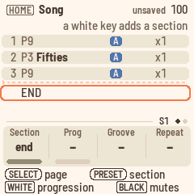
On Home, press HOME to open the Song page. Press HOME again to go back to Home.
The Song page lists the song's sections from top to bottom. Each row shows:
- the section's number
- its progression, such as "P3 Fifties", or "empty" if the progression has no chords
- an ink M if the section mutes an instrument or a melody
- its groove, as a slate A or an amber B, with "+ fill" or "no fill" if you chose one
- how many times it repeats, such as "x2"
- its own transpose, such as "+2" (nothing shows at 0)
You see four sections at a time, and the list only scrolls when the cursor needs it to. Below the last section is END, where new sections go.
The cursor is the coral ring, and the line above the rows tells you where it is, such as "section 3 of 6". On END, that line says "a white key adds a section". While the song plays, the section that's playing is filled teal. If the cursor is on it too, you see the teal fill inside the coral ring.
Adding sections
Press white key n to add a section that plays Pn. A light coral arrow and a moving line show you where it will go: above the section at the cursor, or at the end if the cursor is on END. The sections below move down, and the cursor moves with them, so keys you press one after another go in in that order.
- A new section takes the groove of the nearest section above it that plays the same progression. If there isn't one, it starts on Groove A. It plays once, with nothing muted.
- On END, turning KNOB 2 (Prog) up also adds a section, playing P1.
- While the song plays, you can't add a section at or before the one that's playing. Polly says "INSERT SECTION · STOP FIRST".
- A song can have up to 32 sections.
Changing a section
The knobs on page 1 change the section at the cursor:
- KNOB 1 (Section) moves the cursor. PRESETS does the same.
- KNOB 2 (Prog) sets the section's progression. Turning it down past P1 to "–" removes the section (see Removing sections).
- KNOB 3 (Groove) sets the groove, and whether a fill plays at the end of the section. It goes A, A + fill, A no fill, B, B + fill, B no fill, and stops at both ends.
- With A or B, a fill plays if the next section has a different groove.
- With A + fill or B + fill, a fill always plays.
- With A no fill or B no fill, a fill never plays.
- KNOB 4 (Repeat) sets how many times the section plays, from 1 to 8.
Each section has its own groove, so changing it doesn't affect other sections that play the same progression.
Under the rows are the mutes of the section at the cursor: D1 D2 PC BA, C1–C4, and then the melodies M1 and M2 in plum. A filled name plays, and an outlined one is muted. Black keys 1–8 mute the section's instruments, and black keys 9 and 10 mute its melodies. Press a key again to unmute. On END, the black keys do nothing. See Mutes.
Removing sections
Turn KNOB 2 (Prog) down past P1 to "–". The section is struck through and reads "section removed". You can mark as many sections as you like, and Polly removes them all when you leave the Song pages, in one undo step.
- To keep a marked section after all, turn KNOB 2 back up, and it comes back as it was.
- If the song is playing, it skips marked sections straight away. A marked section that's already playing finishes its pass first. The song keeps playing when you leave the Song pages.
- If a marked section has melody notes, Polly asks before removing it, for example "REMOVE SECTION 3 AND MELODY?". Press SEL to remove it, or HOME to keep all the marked sections.
- If you undo before you leave, the marks are cleared and the sections stay.
Playing the song
Press PLAY on the Song page to play the song from section 1. To start somewhere else, use PLAY FROM SECTION in the song's list.
While the song plays:
- The section that's playing shows a small clock instead of its number. The clock fills up as the section plays, repeats included, and when it's full, the next section starts.
- During the Intro, a fill or the Ending, the line above the sections tells you which one, for example "Intro · then section 1", "Fill AB · into section 3" or "Ending · then stop". The Intro and the Ending have their own clock at the start of that line.
- A fill takes up the last bar of the section before it, and the band plays it with the mutes of the section it leads into. So if a breakdown has the drums muted, they come back for the fill into the next full section. The melodies keep the mutes of their own section.
The song's second page
Turn SELECT for page 2:
- KNOB 1 (Transpose) sets the section's own transpose, from −6 to +5, on top of the song's. PRESETS steps through the sections.
- KNOB 2 (Intro) turns the song's Intro on or off.
- KNOB 3 (Ending) turns the song's Ending on or off.
- KNOB 4 (At end) sets what happens after the last section. With "stop" the song stops, and with "again" it goes back to section 1 and keeps looping, without the Ending.
To switch to another song, hold HOME and turn PRESETS.
Writing sections while the song plays
You can also build a song by playing it.
- On the Song page, press REC, then PLAY. Polly counts in with a bar of clicks.
- Hold HOME and press a white key. Its progression goes into the section that's playing, or into the next one if this section is in its last bar. After the last section, Polly adds a new one.
- Hold HOME and press black key 2 or 3 to set the section's groove to A or B.
- To set the mutes of the section that's playing, use the black keys, or KNOB 4 on the Band page.
- Press REC again to stop writing. The song keeps playing.
The song's actions (SEL)
On the Song pages, the SEL list opens on PLAY FROM SECTION, for the section at the cursor. After it come these actions:
- INSERT SECTION puts a copy of the section at the cursor above it, without its melody notes.
- DELETE SECTION deletes the section at the cursor, along with its melody notes. If it has any, Polly asks first: "SECTION 3 HAS MELODY NOTES: DELETE?".
- CLEAR SECTIONS clears the sections and the melodies, after asking "CLEAR S1'S SECTIONS?". The style, tempo, transpose, mutes and progressions stay. The Intro and Ending turn on again, and At end goes back to "stop".
- NEW SONG makes the song as it is on a new Polly, after asking "NEW SONG: CLEAR ALL OF S1?". The song then has no sections or melodies, the ready-made progressions, and Pop in every groove at Pop's tempo. Nothing is transposed or muted, the Intro and Ending are on, and At end is "stop". The melodies' sounds go back to their defaults too. Edited grooves that the song played stay in memory for any song to use, until you free them there. One undo brings the whole song back.
- COPY SONG TO copies the song into another one, such as S2. Turn ALGORITHM to pick it. If that song has sections, Polly asks before replacing it. The melodies aren't copied, and the other song's melodies are cleared.
INSERT SECTION, DELETE SECTION, NEW SONG and COPY SONG TO only work while Polly is stopped. If it's playing, Polly says "STOP FIRST".
A song with no sections can't play as a song. If you press PLAY on the Song page, Polly says "NO SECTIONS · WHITE KEYS FIRST". If you empty the song you're in, with CLEAR SECTIONS or by deleting its last section, the band follows your chords again, and Polly says "NO SECTIONS FOLLOWING YOU". After NEW SONG, Prog is on "follow" too, and the Progression page shows P1.
Recording an instrument
You can record your own notes into any instrument of a groove. Polly records into the selected instrument of the groove or extra that's playing, while it loops.
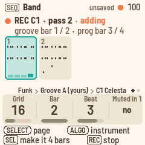
- Press SEQ to open the Band page.
- Turn ALGORITHM to pick the instrument. The keys now play its sound.
- Press REC. A coral dot appears in the header, REC lights, and PLAY blinks red. The screen shows the groove as bars, with the instrument's notes in each, and "REC C1 · starts with PLAY". The bottom line says "[REC] stop".
- Press PLAY. The click counts in for one bar while the band waits: the top of the screen says "Count-in 4", and bar 1 counts down the beats in large numbers. Then the groove starts, PLAY turns red, and you play.
- The groove loops, and each pass adds to what's already there. A new note is heard from the next pass on. The screen shows where you are, such as "REC C1 · pass 2 · adding", and under it the groove's bar and, if a progression is playing, the progression's bar: "groove bar 1 / 2 · prog bar 3 / 4".
- Press REC again to stop recording. The groove keeps playing.
The Band page
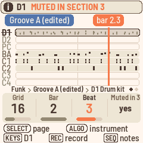
The Band page shows the eight instruments of the groove that's playing, with their notes in ink.
- Drum hits are short ticks.
- A muted instrument is pale, with its name struck through.
- An instrument with no notes is faded.
- The selected instrument's row is darker, with an outline.
- The playhead is a teal line.
- The cursor is a coral line down through the instruments, with its position in coral above it, such as "bar 2.3".
The groove's pill, such as "Groove A (edited)", is at the top left. To change the groove's length, go to the Groove length page.
- KNOB 1 (Grid) sets the grid (see The grid below).
- KNOB 2 (Bar) and KNOB 3 (Beat) move the cursor.
- KNOB 4 (Muted) mutes or unmutes the selected instrument. See Mutes.
- PRESETS changes what the playing groove plays, starting with your edited copies and then the styles'. If the band is playing and the groove has unsaved changes, press SAVE first.
- To fix a single note, press SEQ again. See Fixing notes.
How recording works
- The click. A woodblock counts the beats while you record, and always during a count-in. Setup's Click knob turns it off, on for recording only (rec), or on all the time.
- The count-in. When you press REC and then PLAY, Polly counts in for one bar. You only hear the click while the band waits, and the header counts down from "Count-in 4". Recording starts on the band's first beat, and a note you play just before it still lands on it. The count-in works the same for everything you record: an instrument, a new progression, chords, a melody or sections. To stop during the count-in, press PLAY. MIDI start goes out when the band starts, after the count-in, so a computer recording Polly stays in time. When Polly follows MIDI clock, there's no count-in, and recording starts with the clock.
- The grid. Band's KNOB 1 (Grid) moves the notes you record to the nearest 8th, 8th triplet, 16th, 16th triplet or 32nd. At "off", they stay exactly as you played them. Turning clockwise makes the grid finer: 8, 8T, 16, 16T, 32, off.
- As played. The first time you record into an empty instrument whose type is Chord 1, Chord 2 or Bass, Polly switches it to Parallel and tells you "C1: AS PLAYED". Your notes then play back exactly as you played them, over the chord you played them on. Over a different chord, they move with the root by the shorter way and keep their shape. For example, a line you played over Am goes up a third over C. The instrument's range also opens up to the whole keyboard. You can see and change the type on the Sound page (EDIT). If you set it back there, Polly won't switch it again.
- An instrument that already has notes, such as a style's comping, keeps its type, and its notes keep following the chords. Polly tells you "C1 FOLLOWS CHORDS", and the bottom line offers "[SEL] clear C1 to record as played". Anything you record into it follows the chords too.
- REC while the band plays starts at the next bar line, wherever the groove is. The screen rings that bar and counts down its beats, and a note played just before the bar line lands on it. The passes count from there, so if you start at bar 3 of a 4-bar groove, each pass goes bars 3, 4, 1, 2.
- A groove shorter than the progression. Say a style's 2-bar Groove A plays over a 4-bar progression. While you record, the bottom line offers "[SEL] make it 4 bars". Press SEL, and the groove becomes as long as the progression, its bars repeating into the new ones. You'll also find this in the SEL list as MATCH PROG LENGTH. Afterwards, what you play over the progression's bar 3 stays with bar 3.
- In a song, a fill takes the last bar of a section if the section has "+ fill", or if the groove changes after it (unless the section has "no fill"). That bar plays the fill instead of the groove, so you won't hear what you record into the groove's last bar there.
- Pressing REC before PLAY outside a song plays the groove you're recording into right away, without the Intro.
- When the band changes groove, recording stops. That includes a fill, an ending, or the next section of a song. Polly tells you "RECORD OFF NEW SECTION". To record, play without a song, or on a groove that loops.
- A groove holds 600 notes. Once it's full, Polly drops new notes.
Edited grooves
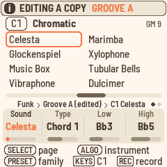
The styles themselves never change. The first time you record into a style's groove or extra, or change its sound, mixer or length, Polly copies it into a free place in memory, and you edit the copy. Polly tells you, for example "EDITING A COPY · GROOVE A" or "RECORD C1 · GROOVE A (EDITED)". From then on, that groove plays the edited copy whatever the Style knob says, and the screen marks it "(edited)", until you choose BACK TO STYLE. Muting an instrument doesn't make a copy, because mutes belong to the song, not to the groove.
Edited grooves share memory's 16 places with the melodies. If no place is free, Polly says MEMORY FULL and "NOT KEPT": your change still plays, but you'll lose it once you pick something else. If you free a place, the change moves into it right away, and Polly tells you, for example "GROOVE A KEPT IN MEMORY 14". See Memory.
To copy a groove into a place of your choice, stop first. Then, on the Band or Groove length page, hold SAVE and press white key n. Polly copies the groove to place n and says, for example, "COPIED TO MEMORY 7". If the place holds another groove, Polly asks first. A place that holds melodies or progressions can't take a groove.
Groove length (SEQ, SELECT)
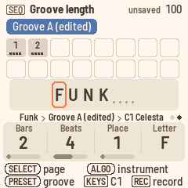
This page sets the groove's length and its name. Each bar is a cell, with its number at the top and its beats along the bottom, and the bars you could still add, up to 16, are drawn as outlines. The name sits underneath. The letter you're changing is in a coral box, and the empty spaces after it are dots.
- KNOB 1 (Bars) sets the length, from 1 to 16 bars.
- KNOB 2 (Beats) sets the number of beats in a bar, from 2 to 7.
- KNOB 3 (Place) picks a letter of the name, and KNOB 4 (Letter) changes it. A name can have up to eight characters: letters, digits, "-" and "#".
When you make a groove longer, the new bars repeat what's there, so the band keeps going. Each instrument repeats in its own way: a 1-bar drum part repeats bar 1, and a 2-bar bass line repeats bars 1 and 2. When you make a groove shorter, Polly keeps the notes past the end but doesn't play them. Make it longer again, and they come back, with nothing repeated over them.
While a progression plays, the groove follows the progression's bar. If you change the length while the progression is on its bar 3, a 4-bar groove plays its own bar 3. The Band page shows a groove longer than 8 bars one half at a time, such as "bars 9-16 of 16", following the playhead.
The groove's actions (SEL)
On the Band, Groove length, Sound, Mixer and Notes pages, the SEL list opens on actions for the groove that's playing:
- MATCH PROG LENGTH comes first if the groove is shorter than the progression.
- CLEAR C1 clears the selected instrument's notes.
- CLEAR GROOVE A clears the groove, or the extra that's playing.
- BACK TO STYLE gives the groove back to the style. If the band is playing, save your changes first, or Polly says "UNSAVED · SAVE FIRST". Press SAVE, or stop.
- MEMORY shows what's using the memory. It's on the Band, Groove length, Sound and Sound 2 pages.
With a melody selected, the list has the melody's actions instead: CLEAR M1 IN SECTION n, CLEAR M1, QUANTISE M1 IN SECTION n and COPY M1 TO SECTION n. See Melodies.
Effects are shared by every song, so the Effects list only has its knobs.
Melodies
Each song has two melodies, M1 and M2. Use them for lines that run through the whole song, instead of looping with a groove. Melodies only play in a song: when Home's Prog knob says "Song", or after you press PLAY on the Song page.
Every note belongs to its section. Polly keeps it as you heard it, along with the root of the chord under it. If you later change that section's chord or Transpose, or the song's Transpose, the melody moves with the root and keeps its shape. Over the same chord and Transpose, it plays exactly as you played it.
Recording a melody
- On the Song page, press PLAY.
- Press EDIT and turn ALGORITHM past C4 to M1. The keys now play its sound. M1 starts out as a choir, and M2 as strings.
- Press REC. The click counts in to the next bar line, and the screen says "REC M1 · starts at the next bar", counting down the beats in that bar in large numbers. If the Intro is playing, recording waits for section 1.
- Play along. Under "REC M1", the screen shows where your next note will land, such as "song bar 6 · Chorus bar 2.1", and the song as one line with your notes landing on it. See Viewing melodies.
- Press REC again to stop recording, and the song keeps playing. Stopping the song also stops recording, and Polly says "RECORD OFF SONG STOPPED", so the next PLAY doesn't record over your song.
Notes go into the section that's playing, on the Band page's grid, and you hear them the next time that section plays. Recording over a section again adds to what's there, like a punch-in. To replace a section's melody instead, clear it first and then record: press SEL, and the list opens on CLEAR M1 IN SECTION n.
Viewing melodies
With M1 or M2 selected, the Sound page shows the song as one line, whether it's playing or not. The view has three parts.
- The whole song runs across the top. Its sections sit end to end, each as wide as its bars, repeats included, and each is named after its progression, such as "Verse" or "Chorus x2". Polly shortens the names of narrow sections, and names a run of the same progression only once. Groove A sections are slate and Groove B sections amber. The melody's notes are plum ticks along the line, and the other melody's are pale. While the song plays, a teal line moves along it. The section you're in has an outline: teal while that section plays, or coral at the Song page's cursor when Polly is stopped. A short line underneath marks the four bars shown below.
- Four bars run underneath, across sections if need be: the bar before your place, your place, and the two bars after it. A section's first bar shows the section's name and a divider, and the other bars show their number within the section. Notes sit by time and pitch, with the other melody's notes pale. The bar that's playing is teal, with its beats, and the bar you just recorded into flashes coral.
- A readout above them tells you where you are, such as "song bar 9 · Chorus bar 1". When Polly is stopped, it shows the first bar of the section at the Song page's cursor, ringed in coral, which is where PLAY FROM SECTION and a punch-in start. While the song plays, it shows the bar and beat in teal, such as "Chorus bar 3.2". While recording, it shows in coral where your next note will land.
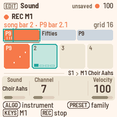
More about melodies
- Punch in. On the Song page, move the cursor to the section with KNOB 1 (Section). Then press EDIT, REC and PLAY. After a bar of count-in, the song starts at that section, and recording starts on its first downbeat. If you press REC while Polly is stopped and following your chords, or stopped on a progression, it switches to the song first.
- A second melody. Turn ALGORITHM to M2, and you keep recording, now into M2. M1's notes show dimly under M2's, so you can play against them.
- Clear. On the Sound page (EDIT), the SEL list opens on CLEAR M1 IN SECTION 3, for the section that's playing or, if Polly is stopped, the section at the Song page's cursor. Below it, CLEAR M1 clears M1 in the whole song. Polly asks before either one.
- Copy a section's melody. Choose COPY M1 TO SECTION 3, where 3 is the same section. Turn ALGORITHM to pick the section to copy from, such as "from 2", and press SEL to copy its M1 notes over section 3's. If section 3 already has notes, Polly asks first. The copied notes play over section 3's chords as played, moved with its root. You can undo the copy in one step.
- Quantise. QUANTISE M1 IN SECTION 3, in the SEL list, moves that section's M1 notes to the nearest line of the Band page's grid, which you'll see at the right as 16, 8T and so on. So you can record with the grid off to play freely, then set the grid on the Band page and quantise. One undo takes it back.
- Sound. A melody has a single Sound page, with the sound's family at the top in plum, such as "M1 Ensemble". Turn KNOB 1 to change the sound, or PRESETS to jump to the next family. As with an instrument, the family's eight sounds show for a moment, with the current one ringed. KNOB 1 sets the sound and KNOB 2 the channel. Because the keys have no velocity, KNOB 4 (Velocity) sets how loud the notes you record from now on will play. It starts at 100. A melody always plays as played across the whole keyboard, so it has no type, range or high key. The Mixer and Mixer tone pages have a strip for each melody, and black keys 9 and 10 select them there.
- Mutes. On the Song page, black keys 9 and 10 mute M1 and M2 in the section at the cursor.
- On Home, in a song, M1 and M2 appear at the right of the "next:" line if they have notes. They're plum, turn teal while a note sounds, and are outlined and struck through while muted.
- Outside a song. If you press REC on a melody while the band follows your chords or plays a progression, Polly tells you "MELODIES RECORD IN A SONG".
- Memory. Melodies share memory's 16 places. A song's melodies take one place, which holds about 420 notes, and a second place if they outgrow it. "MEMORY FULL" or "MELODY FULL" means no place is left. See Memory.
Fixing notes
You don't have to record again to fix one wrong note. In Notes, you can edit the selected instrument's notes in the groove that's playing, or a melody's notes along the song.
To open Notes, press SEQ for Band, then press SEQ again. In Notes, SEQ takes you back to Band, and any other page button leaves it. As on every page, ALGORITHM picks whose notes you're editing: D1 to C4, M1 or M2.
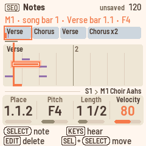
The Notes page
Notes is a piano roll, with time running from left to right and pitch from bottom to top. A melody's notes are plum, with the other melody's notes pale underneath. An instrument's notes are ink, and drum hits are short ticks. For a melody, the song line runs along the top, with the stretch on the screen marked under it. Each bar shows its number, and a section's first bar shows the section's name.
- The cursor is a coral line on the grid. The grid follows the Band page's Grid setting (8, 8T, 16, 16T or 32), and uses 32nds if the grid is off. A coral mark along the bottom shows the step the cursor is on.
- The selected note has a coral ring around it.
- The playhead is teal while Polly plays.
- The readout at the top tells you where the cursor is and what the note is, such as "M1 · song bar 1 · Verse bar 1.1 · F4" or "D1 · bar 1.1 · Pedal hat". Drum notes are named after their sound.
Editing notes
- Select a note. Turn SELECT to step from note to note in time order. In a chord, it takes the notes one at a time, lowest first. The cursor follows.
- Move the cursor. KNOB 1 (Place) moves the cursor one grid step at a time, empty places included. "1.1.2" means bar 1, beat 1, second step. If a note starts in that step, it's selected. If not, the cursor is on an empty place.
- Change the pitch. KNOB 2 (Pitch) changes the selected note's pitch. For a drum, it changes the sound, such as Snare or Closed hat.
- Change the length. KNOB 3 (Length) makes the note longer or shorter, one grid step at a time. The length shows in beats, such as "1/2" or "1 1/2". For finer steps, hold SEL while you turn KNOB 3.
- Change the velocity. KNOB 4 (Velocity) sets how loud the note plays, from 1 to 127.
- On an empty place, the knobs show "–".
- Move a note. Hold SEL and turn SELECT or KNOB 1. The selected note moves one grid step at a time and keeps its length and velocity. If you move a melody note past the end of its section, it goes into the next section and takes the root of the chord there, as if you'd recorded it there.
- Delete a note. Press EDIT.
- Add a note. Move the cursor to an empty place and play a key. The note goes in there, one grid step long. A melody note gets the melody's velocity and the root of the chord sounding there, so it follows chord changes like a recorded note. If you hold several keys, they go in as a chord. When you let go, the cursor moves on one step, so you can write a line note by note. On an existing note, the keys only play. Notes you add to an instrument are stored as if over C major 7, the way the styles store theirs.
- Zoom. PRESETS shows 8, 4, 2 or 1 bars, and down to a single beat for an instrument. Notes starts at two bars.
- Erase while recording. While Polly plays with REC on, hold EDIT. Polly erases the notes the playhead passes, from the step it's in until you let go, and the readout says "ERASING". The keys keep recording while you hold it.
- Undo. Every edit is one undo step. Hold HOME and press REC to undo, or PLAY to redo. A recording pass, along with anything you erased during it, is one step too.
- An edited copy. Your first edit to a style's groove makes an edited copy, as recording does ("EDITING A COPY · GROOVE A"). A groove holds 600 notes, and Polly says "GROOVE FULL" if you go past that.
- While recording, Notes shows the recording as it happens. The view follows the playhead, and the keys record.
The bass and chord changes
An instrument of type Bass plays the chord's root on its first note after a chord change, whatever note is written there (see the types). In Notes, that's the first note on a bar's first beat, unless it's written as a C, because the grooves are written in C. The readout marks that note, for example "F2, heard as the root".
When you change or add such a note, Polly asks you once for that groove: "PLAY THIS BASS AS WRITTEN?".
- Press SEL for yes, and the bass plays every note as written. Its Type becomes Chord 1, and Polly tells you "PLAYS AS WRITTEN". One undo takes it back.
- Press HOME for no, and the bass keeps playing the root on chord changes.
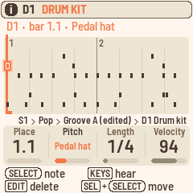
Sound
The sound pages show and change the groove that's playing, one instrument at a time. ALGORITHM picks the instrument.
Sound (EDIT)
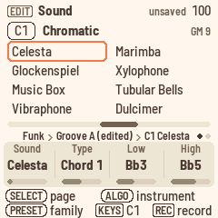
The Sound page works like a browser. At the top is the sound's General MIDI family of eight, such as "Chromatic". Below it, the family's sounds are listed in two columns of four, from Celesta to Dulcimer. A coral ring marks the instrument's sound, and its General MIDI number is at the right in small type, such as "GM 9". As you turn KNOB 1, the ring moves through the family, so you can see where you're going. Under the sounds, a bar across the whole MIDI keyboard shows the instrument's range, which the Low and High knobs set.
- KNOB 1 (Sound) picks one of the 128 General MIDI sounds, by name. PRESETS jumps a family of eight at a time: pianos, organs, guitars, basses and so on. When Polly is stopped, each new sound plays a short note from the middle of the instrument's range, so you can hear it. While the band plays, you only hear that note for an instrument that's muted or silent in the groove. If you turn fast, it plays a note every few steps rather than on every step. Nothing plays while you record, or while a recording is waiting for PLAY. A drum instrument plays the drum kit, so its page says "Drums" and shows the kit, without a family, range, Low or High.
- KNOB 2 (Type) sets how the instrument follows the chords. It says "as played" once Polly has switched it. See How recording works.
- KNOB 3 (Low) and KNOB 4 (High) set the lowest and highest notes. A note outside that range moves by octaves until it fits.
| Type | For | What it does |
|---|---|---|
| Bypass | Drums | Never changes. |
| Parallel | Riffs | Moves with the chord's root and keeps its shape. |
| Chord 1 | Chords, arpeggios | Each note moves to the matching note of the new chord. |
| Chord 2 | Pads | Like Chord 1, but each note stays close to the one before, for smooth voice leading. |
| Bass | Bass lines | Like Chord 1, but the first note after a chord change is the root, or the slash bass, whatever note is written there. |
Sound 2 (EDIT, SELECT)
- KNOB 1 (High key) sets the highest root a Chord 1 or Bass line can play from before it drops an octave, from C to B, or off. It keeps a bass line from climbing out of reach as the chords rise. The page draws an octave of keys, with the high key in coral and the roots above it shaded, and explains it in words, such as "roots above F# drop an octave". Drums have no high key.
- KNOB 2 (Channel) sets the MIDI channel, from 1 to 15. Drums are on channel 10, and the click uses channel 16.
Mixer (LFO)
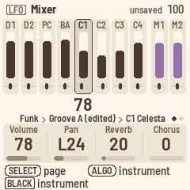
The Mixer has ten strips: the eight instruments, and then the melodies M1 and M2 in plum. Each strip shows its volume and pan. The selected strip is darker, with an outline, and its volume is shown in large numbers under it. A muted strip is pale. Press black keys 1–10 to select a strip. For the selected strip:
- KNOB 1 sets the volume.
- KNOB 2 sets the pan.
- KNOB 3 sets the reverb send.
- KNOB 4 sets the chorus send.
To see every instrument's sends at once, open the Effects page. Instruments on the same channel share these settings, and D1, D2 and PC are all on channel 10.
Mixer tone (LFO, SELECT)
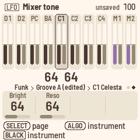
For the selected instrument, KNOB 1 (Bright) sets the filter's cutoff, shown by the strip's dark bar, and KNOB 2 (Reso) sets the resonance, shown by the grey bar. Both values appear in large numbers under the strip. At 64 the sound is unchanged, and a line across the strips marks that point. Lower Bright makes the sound darker, and higher Reso makes it more pronounced.
Effects (FX)
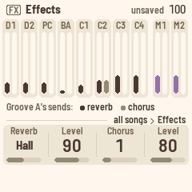
On the Effects page, you set the effects that every instrument shares, in every song.
- KNOB 1 (Reverb) picks the reverb: off, L.hall (large hall), Hall, Chamb. (chamber) or Room.
- KNOB 2 (Level) sets the reverb level.
- KNOB 3 (Chorus) picks the chorus, from 1 to 4.
- KNOB 4 (Level) sets the chorus level.
The page also shows how much each instrument and each melody sends to the effects, with the reverb send as a dark bar and the chorus send as a grey one. To change the sends, use the Mixer's KNOB 3 and KNOB 4.
Mutes
Mutes belong to the song, not to the groove, so muting never makes an edited copy.
- Outside a song, when the band follows your chords or plays a progression, the Band page's KNOB 4 (Muted) mutes the selected instrument. It stays muted in every groove and through fills. The mute is saved with the song, and each song has its own.
- In a song, each section has its own mutes. You can set them on the Song page with black keys 1–10 (see Changing a section), or with the Band page's KNOB 4, which then reads "Muted in 2". It mutes the instrument in that one section, and the mute is saved with the song. While the song plays, the knob works on the section that's playing, so you hear the change right away. When Polly is stopped, it works on the section at the Song page's cursor. Polly tells you, for example "D1 MUTED IN SECTION 2" or "D1 PLAYS IN SECTION 2". If the cursor is on END, there's no section, and the knob shows "–". During the Intro or the Ending, the knob only mutes the instrument until the first section starts.
- A fill plays with the mutes of the section it leads into, and the melodies keep the mutes of their own section.
Songs and saving
This chapter covers switching songs, saving, undo, memory and backups.
Four songs
Polly holds four songs, each with its own sections, progressions, melodies, tempo, Transpose, style and mutes. A song's progressions are saved with the song, so they never use memory.
To change songs, hold HOME and turn PRESETS, on any page. If the band is playing, the new song waits until you stop, and Polly tells you "SONG S2 WHEN YOU STOP". Polly saves before it loads another song, and saving pauses the sound for a moment.
To start the song you're on from scratch, use NEW SONG in the Song page's list. See The song's actions.
Saving
- When you have something to save, SAVE lights and the header says "unsaved".
- Press SAVE to save right away. It saves the songs, the grooves you've changed and the settings.
- Polly also saves by itself while it's stopped, about four seconds after you last touch it, once the last notes have faded.
Saving pauses the FM-1 for a moment, which is why Polly waits until you stop.
If two grooves in a song play the same edited copy and you changed both, Polly keeps the newest change and tells you, for example "SHARED GROOVE KEPT GROOVE B".
Undo
Hold HOME and press REC to undo, or hold HOME and press PLAY to redo. Neither one records or starts playback, and undo works while the band plays.
The header tells you what was undone, for example "UNDO P9 CHORD", "UNDO SECTION 3", "UNDO TAKE M1", "UNDO PASS C1", "UNDO CLEAR PROG", "REDO C1 SOUND" or "NOTHING TO UNDO". Whatever comes back flashes coral, and the cursor jumps to it: to the chord on the Progression page, to the section on the Song page, and to their section for melody notes.
Undo covers the song you're on:
- its progressions: chords, length, name, loading, clearing and copying
- its sections and settings: style, tempo, Transpose, mutes and the melodies' sounds. NEW SONG is one step, and undoing it brings everything back.
- its melody notes: a take is one step, and so is clearing or copying a section's notes
- its grooves as you change them: sounds, mixer, types, CLEAR C1, CLEAR GROOVE A, BACK TO STYLE, and each pass of a recording
Everything you change before pausing for about a second counts as one undo step. A whole melody take is one step, and so is one pass of an instrument recording. Polly keeps up to 32 steps while it's switched on, or fewer after big ones. Switching songs or switching off clears them.
Undo doesn't cover tempo changes made while playing, the Setup and Effects pages, freeing a groove's place in memory, or a factory reset. Whatever undo brings back is saved like any other change.
Memory
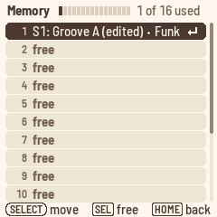
Memory has 16 places, shared by all four songs. They hold your own grooves and the songs' melodies.
Progressions are saved with their song and don't use memory. The four songs share room for about 900 chord changes, and only beyond that does a song's progressions take a place of memory. The list then shows "S1: progressions".
When every place is taken, Polly says MEMORY FULL, and the bottom line offers "[SEL] memory: free one". Press SEL to see what's using the memory. You can also get there by choosing MEMORY at the end of the SEL list on the Band, Groove length or Sound pages.
The list shows one place per line, grouped by song: Song 1's first, then Song 2's, and so on, with the free places last. For example:
- "S1: Groove A (edited) · Funk" is one of your edited grooves. The line tells you which songs play it, which groove it plays as, and its name.
- "S1: melodies" holds Song 1's melody notes. A song with very long melodies takes a second place, "S1: melodies, part 2".
- "No song: groove (edited)" is an edited groove that no song plays now.
- "free" is a free place.
The list fills the screen. The header shows how much is used, as a gauge and in words, such as "Memory 9 of 16 used". The number at the left of each line is the same as the white key you'd use with SAVE to copy a groove there from the Band page ("COPIED TO MEMORY 7").
To free a place, stop, select it and press SEL. Polly asks first.
- An edited groove goes back to the style in the songs that play it. Polly clears its notes, and you can't undo this.
- A song's melody notes are cleared.
- A song's progressions go back to the factory ones, after Polly asks "S1'S PROGRESSIONS BACK TO FACTORY?". They only appear in the list if they needed a place.
HOME takes you back. If MEMORY FULL left a change playing but not kept, that change moves into the freed place right away, and Polly tells you, for example "GROOVE A KEPT IN MEMORY 14". The change can be a groove's sound, a recording or the song's progressions. Melody notes played while memory was full aren't kept, so record them again.
Backup
You can save Polly's songs to a file on your computer and load them back later.
- Connect the FM-1 to your computer with a USB cable.
- Open the Backup page in Chrome or Edge.
- Press Back up to save a file, or Restore to load one.
A backup holds everything Polly keeps:
- the four songs, with their progressions
- the 16 places of memory, with your grooves and melodies
- the settings: Setup, the channels' sounds and Effects
It doesn't include the QY70 styles, which you install again from your ROM, or the button calibration. Polly can keep playing while you back up, but changes that aren't saved yet only go in if you stop first.
A restore replaces everything on Polly with the backup, so stop first. If Polly is playing, it answers STOP FIRST. Polly receives the whole file and checks it before changing anything, and then asks on its screen: RESTORE FROM USB? Press SEL to restore and reload the songs, or HOME to keep what you have. If the cable comes out or the file is damaged, nothing changes. Even a power cut during the restore leaves either the old songs or the new ones, never a mix of both.
You can also back up from a terminal, in this repository:
pip3 install mido python-rtmidi
python3 tools/polly_backup.py backup my-songs.plb
python3 tools/polly_backup.py restore my-songs.plb
python3 tools/polly_backup.py info my-songs.plbBefore a restore, the terminal asks you to confirm: type y, or add --yes to the command. info shows what a backup holds.
A backup from an older Polly, made before progressions were saved with their songs, can't be restored. Polly tells you so, and nothing changes.
Setup and MIDI
Press GLO for Setup, where you set the clock, MIDI out, the lights and the click.
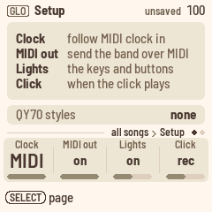
When you open Setup, it lists the four knobs, one per line: Clock, MIDI out, Lights and Click. When you turn a knob, the page explains the setting in words, for example "Click" and "A click on every beat.". The last line is about the QY70 bank.
| Knob | Sets |
|---|---|
| KNOB 1 (Clock) | MIDI (the default): Polly keeps its own time, but follows MIDI clock, start and stop whenever they come in. internal: Polly ignores MIDI clock. |
| KNOB 2 (MIDI out) | on (the default): each instrument goes out over USB on its own channel, with its sound and mixer settings. When Polly keeps its own time, it also sends MIDI clock, start and stop. off: nothing goes out. |
| KNOB 3 (Lights) | on (the default): keys light up as you play, and the other buttons glow. notes: keys light up, but the buttons don't glow. off: the keys stay dark, and only the buttons light. |
| KNOB 4 (Click) | rec (the default): a woodblock on every beat while you record, higher on the first beat of the bar. on: the click plays whenever Polly plays. off: the click only plays during the count-in. |
The click uses MIDI channel 16, so it goes out over MIDI too. It sits a little below the band in the mix, and muting instruments doesn't silence it. The click always counts you in before a recording, even when Click is off. If the band is already playing, it clicks the beats until a recording starts at the next bar line.
The last line shows the state of the QY70 bank: none, the number of styles, "damaged" or "old format".
Factory reset. Stop first. On Setup, press SEL and choose FACTORY RESET. Polly asks "ERASE ALL SONGS AND MEMORY?". Press SEL to erase, or HOME to keep everything. Afterwards, Polly is as it was new: the four songs are empty, memory's 16 places are free, and Setup and the mixer are back to their defaults. The QY70 bank stays installed. A reset can't be undone, so back up first if you might want your songs again.
USB audio. On Setup, press SEL, turn SELECT down to USB AUDIO, and turn ALGO. follows knob (the default): USB audio is as loud as the FM-1, MASTER knob and all. full: USB audio stays at full level whatever the MASTER knob says, so you can record over the cable with the speaker turned down.
Turn SELECT for Status. It shows the processor's load, how many voices are sounding, any audio dropouts (Xruns), and the version. It has no knobs.
MIDI in. MIDI coming in over USB or the TRS jack plays Polly's sounds on all 16 channels, like a General MIDI sound module, with drums on channel 10. It plays alongside the arranger and isn't transposed. Controller 74 changes each channel's filter brightness and controller 71 its resonance, like the Mixer tone page.
USB. The FM-1 shows up as a class-compliant MIDI device called "Polly FM-1". The FM-1 has no MIDI out jack, so MIDI only goes out over USB.
The QY70 bank
The QY70 came with 128 preset styles. If you have a copy of its main ROM, Polly can build all 128 from it and play them alongside its own 16. The ROM is a dump of the QY70's chip, and MAME calls the file qy70main.bin. Polly contains none of Yamaha's music: you bring the ROM, and the bank is for your own use.
Installing on the FM-1
Connect the FM-1 with a USB cable, and run this in a terminal. The tool needs the repository with its base/ folder (fm1-base), which GitHub's ZIP download leaves out, so clone it:
git clone --recursive https://github.com/charlesvestal/fm1-polly
cd fm1-polly
pip3 install mido python-rtmidi
python3 tools/qy70_install.py qy70main.binThe tool builds the bank and asks before writing it (add --yes to skip the question). Writing takes about 30 seconds, and the FM-1 stops playing while it writes. Polly checks everything it receives before using it, so if the cable comes out, you're left with no bank rather than half of one. Run the tool again. When it's done, Setup says "128 styles".
Loading it in the emulator
On the emulator's page, press Load QY70 ROM, or drop the file on the box. Your ROM stays on your computer: the page builds the bank in your browser and keeps it there for your next visit. To remove it, press Forget QY70 styles.
Playing QY70 styles
The QY70 styles come after Polly's 16 on Home's KNOB 1 (Style), whose label then reads "QY style". You can also pick them on the Style pages (ENV). They play with their own bends, swells and filter moves, and change grooves and styles without a gap. A song plays one QY70 style at a time, so if you pick a groove from another QY70 style, the song's other QY70 grooves switch to it too.
What doesn't carry over
- Drum kits. Polly has one General MIDI kit, so the QY70's brush, jazz, room and analog kits all play it.
- XG voices. Variations play their General MIDI instrument, and sound-effect voices play a General MIDI effect.
- Pan on the drum channel. The drum instruments share one pan setting and one set of effects.
- Editing. If you record into a QY70 groove or change it, Polly edits a copy, as with its own styles. The copy then has the 600-note limit, so the quietest short notes are left out first, and Polly leaves out its bends and controllers. As long as you play QY70 styles as they are, there's no note limit.
Keeping the bank
The bank is stored in the FM-1's memory, next to your songs. Restoring M-VAVE's firmware wipes it. If Setup says "none" or "old format" after an update, install it again.
The QY70's styles are © Yamaha Corporation. Don't share the bank, or anything built from your ROM.
Updating and safety
These features come from fm1-base and felucca-bsp, from Felucca, which Polly is built on, and work as they do in the other FM-1 firmwares.
- Update mode. Hold OCT− and OCT+ for 5 seconds. The screen counts down, and the FM-1 restarts, ready for an update. Let go before the end to cancel.
- Safe mode. If the FM-1 fails to start twice in a row, it starts in safe mode, with only USB on, so the web installer can still reach it. Press PLAY to try a normal start again.
- Back to M-VAVE's firmware. The web installer can put the original firmware back, and so can M-VAVE's own updater, M-UPGRADE.
- Button calibration. If buttons do the wrong thing, hold OCT− and OCT+ while you switch on, and follow the screen.
Your songs and grooves survive a Polly update. Putting M-VAVE's firmware back can wipe them, so make a backup first.
Page by page
This table lists every page and what its controls do. On every page, ALGORITHM picks the instrument (D1 to C4, then the melodies M1 and M2), SELECT turns a button's pages, and holding HOME while you turn PRESETS changes the song.
| Page | Button | KNOB 1 | KNOB 2 | KNOB 3 | KNOB 4 | PRESETS |
|---|---|---|---|---|---|---|
| Home | HOME | Style | Tempo | Transpose | Prog | The next progression |
| Song | HOME on Home | Section | Prog | Groove | Repeat | The next section |
| Song 2 | HOME on Home, SELECT | Transpose (the section's) | Intro | Ending | At end | The next section |
| Progression | ARP | Bar | Beat | Root | Type | The next progression |
| Progression 2 | ARP, SELECT | Length | Beats | Bass | Name | The next progression |
| Band | SEQ | Grid | Bar (the cursor) | Beat (the cursor) | Muted | What the groove plays |
| Groove length | SEQ, SELECT | Bars | Beats | Place | Letter | What the groove plays |
| Notes | SEQ, SEQ | Place (the cursor) | Pitch | Length | Velocity | Zoom |
| Sound | EDIT | Sound | Type (a melody: Channel) | Low (drums, a melody: none) | High (drums: none; a melody: Velocity) | Sound family |
| Sound 2 | EDIT, SELECT (not a melody) | High key (drums: none) | Channel | |||
| Mixer | LFO | Volume | Pan | Reverb | Chorus | |
| Mixer tone | LFO, SELECT | Bright | Reso | |||
| Effects | FX | Reverb | Level | Chorus | Level | |
| Style | ENV | Intro | Groove A | Groove B | Style | Style |
| Style 2 | ENV, SELECT | Fill AB | Fill BA | Ending | Style | Style |
| Setup | GLO | Clock | MIDI out | Lights | Click | |
| Status | GLO, SELECT |
Screen mirroring
Polly can show its screen and panel live on a computer connected by USB. Use it to show Polly on a big screen, or when you teach or film. You can also play Polly's panel from the computer.
- Plug the FM-1 into the computer.
- Open the Mirror page in Chrome or Edge.
- Press Connect and allow MIDI with SysEx. The page finds Polly's ports, called Polly FM-1. If it doesn't, pick them in the In and Out lists.
You can show the screen at two or three times its size (×2, ×3). The panel below it lights up as the FM-1 does: buttons and keys show their LEDs, held ones are outlined, and a knob you turn flashes and shows how far it moved. Save PNG saves a picture of the screen. You can also save one from a terminal with python3 tools/polly_mirror.py screen.png.
Turn on Control to play the FM-1 from the page. A button or key on the page stays pressed for as long as you hold the mouse down, and scrolling over a knob turns it.
You can also control Polly from a terminal with python3 tools/polly_remote.py, which takes commands such as tap HOME, turn K1 3, shot s.png or run tests/scenarios/home.polly. A scenario runs its presses, keys, turns, waits and screenshots, and skips the checks only the simulator can make. Polly takes these commands as if they came from its own panel, but only while it's being mirrored. The remote never saves anything by itself, though a SAVE you send saves, as the button does. Update mode can only be started by hand.
run ... --fresh plays the scenario in a test session. Polly stops, saves anything unsaved, and then starts as a new FM-1 would, with no songs, no edited grooves and the first style. The header says TEST, and nothing saved during the test is kept. Your own songs come back as they were when the scenario ends, the mirror stops or the FM-1 restarts.
The mirror costs Polly nothing until a page asks for it. It stops when the page closes, goes quiet for six seconds, or the cable comes out, and any buttons the computer was holding are released. Notes and clock always go out first, so if the computer is slow to keep up, the page skips frames and then catches up.
Screen reader
Polly can tell a screen reader what its screen shows, so you can play it without looking. Plug the FM-1 into a computer with a USB cable and open the FM-1 Screen Reader in Chrome or Edge. The page speaks with its own voice, or passes the words to your computer's screen reader.
You hear the page when you open it, with its knobs and their values, and a knob's new value as you turn it. Chords and notes are said in full, such as "F sharp minor seven flat five" or "B flat 3". You also hear the chord your keys play, a list's row and where it is in the list, the help card when you hold a button, each question with how to answer it, play and stop, and every message on the screen. While a song plays, the bars, sections and chords going by aren't read out, so you can listen to the music. Press Read the whole screen on the page, or the W key, to hear everything: the page, the progression's chords or the song's sections, and what the keys and encoders do here.
Polly sends nothing until the page asks for it, so a DAW on the same cable never sees a thing.
Credits
- Polly is built on fm1-base and felucca-bsp (MPL-2.0), from Felucca by Leo Kuroshita of Hügelton Instruments. https://github.com/charlesvestal/fm1-base, https://github.com/hugelton/felucca-bsp, https://github.com/hugelton/Felucca
- The synth and its General MIDI sounds are Sonivox EAS by Sonic Network and the Android Open Source Project (Apache-2.0). https://github.com/EmbeddedSynth/sonivox
- The drums in Polly's styles come from the Groove MIDI Dataset by Jon Gillick, Adam Roberts, Jesse Engel, Douglas Eck and David Bamman of Google Magenta, © Google LLC (CC BY 4.0). Polly uses quantised excerpts. https://magenta.tensorflow.org/datasets/groove
- Running FM-1 firmware in the browser was the idea of Groove OS by Peter Gombos. https://www.groove-os.com/
- qy100-toolkit decoded the QY70's pattern format, which helped Polly read the ROM's styles. https://github.com/doffu0000/qy100-toolkit
- Pyodide (MPL-2.0) builds the QY70 bank in the browser.
- The screen's typeface is Barlow by the Barlow Project Authors (SIL OFL 1.1).
- Notes follows the design of Melodee by Kerem Kilic of Ellic Studio (GPL-3.0), which also runs on Felucca, including its piano roll and the way it works with notes: SELECT walks the notes and the knobs edit them, holding EDIT deletes or erases, and holding a button while turning SELECT moves a note. https://github.com/keremimo/melodee
Polly is inspired by the Yamaha QY70 and isn't affiliated with Yamaha. "M-VAVE" and "FM-1" are trademarks of their owners. Polly is GPL-3.0 (see LICENSING.md).